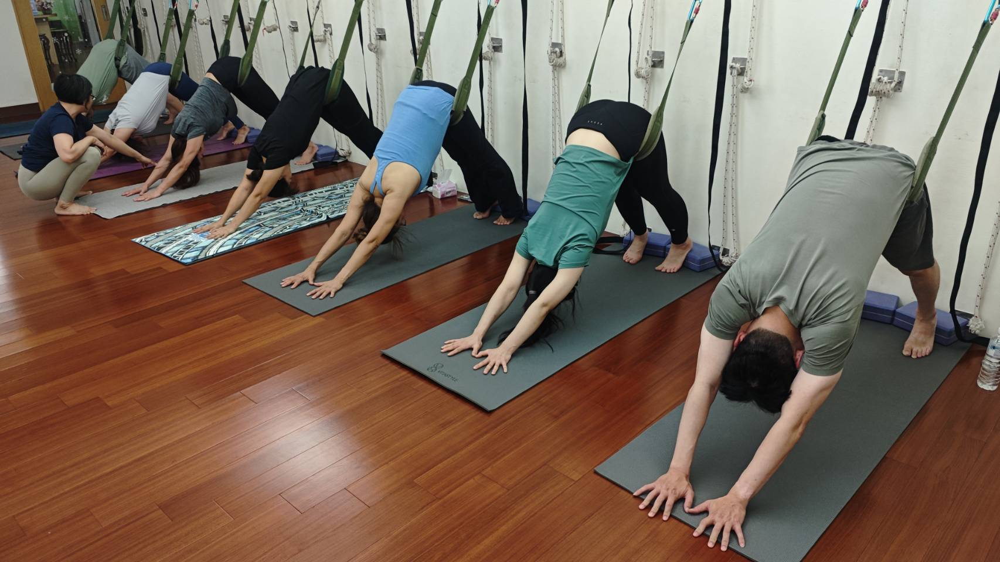
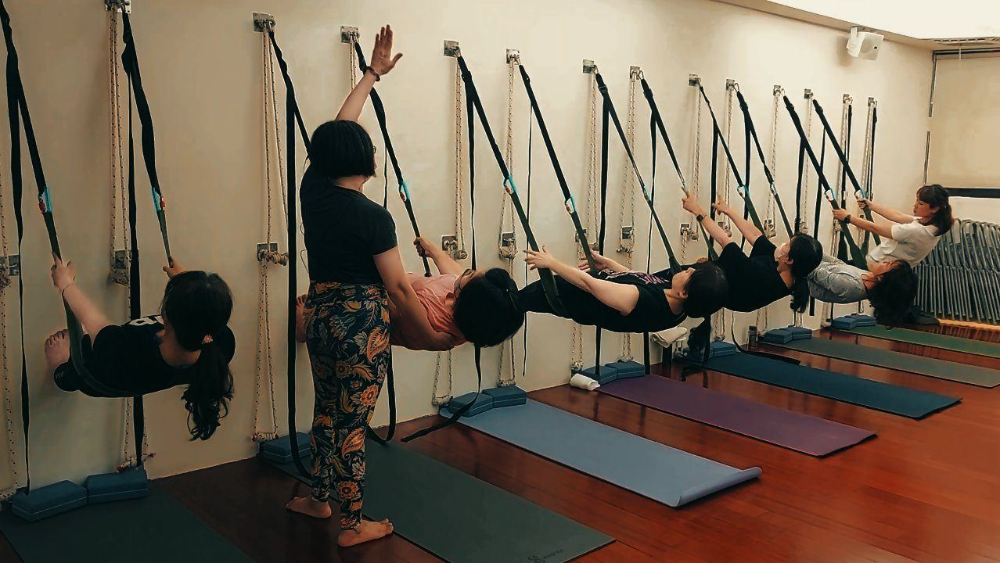

久坐讓屁股「失憶」，怎麼把它叫醒

你有沒有過這種感覺：明明沒搬重物，腰卻整天痠；大腿後側總是緊緊的，怎麼拉都拉不開。你以為是核心太弱、是柔軟度不夠，但很多時候，真正「該上工卻在偷懶」的，是你天天坐著的那塊——屁股。
什麼是「臀肌失憶」？
「臀肌失憶」（gluteal amnesia）是個很傳神的說法。它不是真的把肌肉忘了，而是你的臀大肌因為長期被壓著、被拉長，慢慢變得「叫不太動」。我們一天坐上七、八個小時，臀大肌被身體的重量壓在椅子上，長時間處在被拉長的狀態；同時髖關節前側的髂腰肌一直收縮變短。一鬆一緊之間，大腦跟臀部之間那條「出力的線」就愈接愈不順。
問題是，臀大肌本來是走路、站起、上樓梯、往前推進的主力。當它罷工，身體不會停下來——它會找別人代打：
- 腰部的豎脊肌跳出來幫忙撐骨盆，於是你整天腰痠、下背緊。
- 大腿後側的膕旁肌（腿後肌）接手髖的伸展，於是後側總是緊繃、一拉就快抽筋。
- 骨盆容易被髂腰肌往前拉，變成前傾，小腹看起來也跟著凸。
腰痠、大腿緊，常常不是它們太操，而是屁股沒在做它該做的事。
壁繩怎麼幫你「找回」臀部的感覺
喚醒臀肌的第一步，其實不是拚命練，而是「先感覺得到它」。當一塊肌肉睡太久，你連要用力都不知道從哪裡出力。壁繩的好處，就是那條繩子會替你把骨盆穩住、給你一個可以「靠著」的支點，讓你在安全範圍裡慢慢把重量交還給臀部，去體會「原來出力是這種感覺」。有了穩定的依靠，你不用先擔心會晃、會拉傷，反而更容易專心去找臀部發力的位置。這也是為什麼身體很硬、沒基礎的人反而更適合壁繩——它是先給你安全感，再談進步。老師會在旁邊提醒你：現在該有感覺的地方是屁股，不是腰、不是大腿前側。

今天就能做的一個小練習：喚醒臀部
在家或辦公室都能做，動作叫「橋式起臀」，重點不是抬多高，而是「用對地方」：
- 平躺（或坐在椅子邊也可以），雙腳踩穩、與髖同寬。
- 先深吸一口氣，吐氣時，想像用「夾臀」的力量把骨盆往上帶，而不是用腰去頂。
- 到最高點停 2～3 秒，去感覺屁股是不是在出力；如果只有腰痠，就把高度降低一點。
- 慢慢放下，一次 10 下，配著呼吸做 2～3 組。
要老實跟你說：臀肌不是做一次就會「醒」的。它睡了很久，需要你規律地、每天一點點地提醒它「該你上場了」。剛開始你可能會覺得屁股很沒力、很不會用力，這很正常，代表你確實找對了那塊該練的肌肉。
本文為體態與姿勢的一般衛教與練習分享，非醫療診斷或治療。若有疼痛、舊傷或特殊病史，請先諮詢合格醫療專業人員。